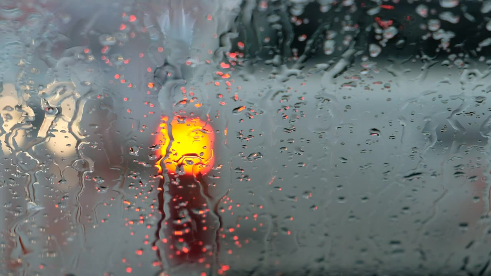

雨窗 · 实拍对照
创作说明
这是一段十五秒的实拍氛围对照样片：雨滴沿玻璃滑落，窗外灯光保持虚焦。短字幕由网页随播放时间叠加。
视频：Mixkit《Window on a rainy day》↗，依据 Mixkit Stock Video Free License ↗ 使用并裁剪。
音频：Shizhao《SV100344.ogg》↗，授权标记为 PD-author。视频与雨声来自不同来源，经过音画合成，并非同步录制的现场声音。
本页用于观察实拍运动与声音形成的氛围。原创 AI 雨窗茶寮是另一项制作，可在这里查看其当前状态 ↗。